从你按下回车到大模型吐出第一个字：TTFT 全链路拆解
引言
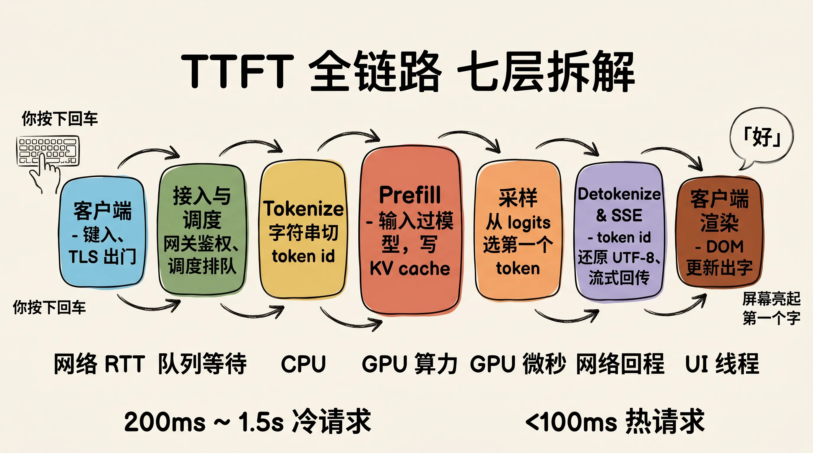
你在 ChatGPT 输入框敲下「帮我写一段代码」，按下回车。光标停了 200~800 毫秒，第一个字「好」缓缓蹦出来。这段静默期工程上有个专门的名字，叫 TTFT（Time To First Token，首字延迟，从客户端发出请求到收到第一个生成 token 的时间）。
很多人把 TTFT 简单理解为「网络延迟 + 一次模型推理」。但其实从你按键到屏幕亮起，请求至少穿过了七层系统，每一层都有自己要处理的事：
| 阶段 | 工作 | 主导成本 |
|---|---|---|
| 1. 客户端 | 键入、组装请求、TLS 出门 | 网络往返（RTT） |
| 2. 接入与调度 | 网关鉴权、限流、路由到推理节点 | 队列等待 |
| 3. Tokenize | 字符串切成 token id 序列 | CPU |
| 4. Prefill | 输入 token 一次性过模型，写 KV cache | GPU 算力 |
| 5. 采样 | 从 logits 选出第一个 token | GPU（很短） |
| 6. Detokenize & 流式回传 | token id 还原成 UTF-8 字符，SSE 推回 | 网络回程 |
| 7. 客户端渲染 | 浏览器收到 chunk，DOM 更新出字 | UI 线程 |
这篇文章把这七层逐个拆开。读完你会知道：你看到的那个「好」字，是怎么从一次按键事件，变成 GPU 上的一次矩阵乘法，再变回 SSE 流里的一个字符的。
1. 客户端：从按键到 HTTP 请求出门
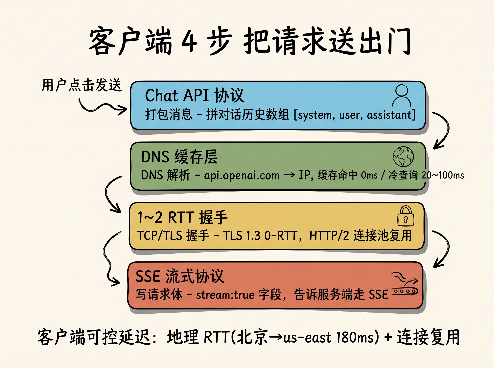
链路的起点其实不是按键本身，而是输入法（IME，Input Method Editor，负责把键盘扫描码转成文字字符）。中文输入法会先把拼音缓冲在自己的窗口里，按空格才把候选词提交给宿主输入框。这一步对延迟没影响，但解释了为什么中文用户的「按下回车」往往比英文用户晚几百毫秒。
文字进入输入框后，前端框架（React、Vue 之类）通过受控组件维护一个 state，按下「发送」时会做四件事：
- 打包消息：把当前输入和对话历史（context）拼成一个数组，结构通常是
[{role: "system"}, {role: "user"}, {role: "assistant"}, ...]，符合 OpenAI/Anthropic 的 Chat API 协议。 - DNS 解析：把
api.openai.com之类的域名解析成 IP。浏览器、操作系统、本地路由器层层缓存，命中缓存时延接近 0；冷查询要走递归解析，可能 20~100ms。 - TCP/TLS 握手：TLS（Transport Layer Security，传输层安全协议，HTTPS 的 S）的完整握手要 1~2 个 RTT（Round Trip Time，一次网络往返时间）。会话复用（Session Resumption）和 TLS 1.3 的 0-RTT 能省掉这部分。生产 SDK 几乎都开了 HTTP/2 的连接池，单条 TCP 上多路复用多个请求，握手成本被摊销到接近零。
- 写请求体：通常带一个
stream: true字段，告诉服务端要走 SSE（Server-Sent Events，一种基于 HTTP 长连接的单向流式协议，服务端逐块 push 数据，客户端按\n\n分隔事件），而不是一次性返回完整响应。
第一个字之前，客户端能影响的延迟其实就两块：地理距离决定的 RTT（北京到 us-east-1 大约 180ms）和连接是否复用。其他几乎全在服务端。
2. 接入与调度：从公网到 GPU 的最后一公里
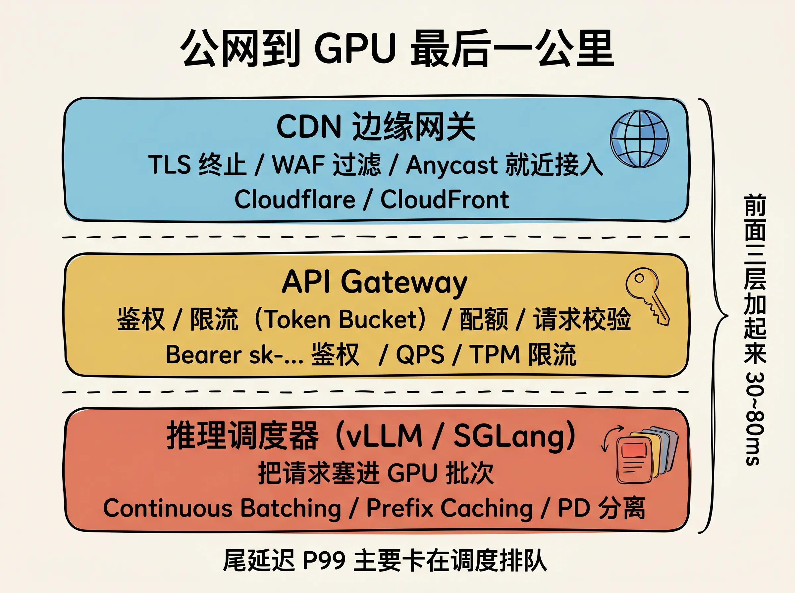
请求落地后，先经过一段「外围基础设施」才到推理引擎。
边缘网关（Edge Gateway，部署在 CDN 节点上的反向代理，比如 Cloudflare、AWS CloudFront）做三件事：
- TLS 终止（TLS Termination，在边缘就解开 HTTPS，回源用明文 HTTP，节省后端 CPU）。
- WAF（Web Application Firewall，Web 应用防火墙，过滤 SQL 注入、XSS、prompt injection 黑名单等）。
- 就近接入（Anycast 路由，让客户端 TCP 直接连到最近的 PoP 节点，把长距离 RTT 转移到 CDN 内部的优化骨干网）。
然后到 API Gateway（API 网关，平台层入口，负责鉴权、配额、路由）：
| 检查项 | 说明 |
|---|---|
| 鉴权 | 校验 Authorization: Bearer sk-... 的 API Key 是否有效、未过期 |
| 限流（Rate Limiting） | 用令牌桶（Token Bucket）或漏桶（Leaky Bucket）算法控制 QPS（Queries Per Second，每秒请求数）和 TPM（Tokens Per Minute，每分钟 token 数） |
| 配额（Quota） | 当月预付费用是否还够 |
| 请求校验 | 模型名是否合法、消息体大小是否超 context window（上下文窗口） |
通过之后，请求进入 推理调度器（Inference Scheduler）。主流开源实现是 vLLM（UC Berkeley 开源，PagedAttention 论文的参考实现）和 SGLang，闭源云厂商一般有自研。调度器的任务是把请求塞进 GPU 上跑的某个 inference engine（推理引擎进程）的批次里。
这里有几个对 TTFT 影响极大的概念。
连续批处理（Continuous Batching，又叫 in-flight batching）。传统静态批处理（Static Batching）要等齐一个 batch 才一起跑，最后一个请求要等前面所有请求都生成完。连续批处理在每一步迭代结束后立刻把已完成的请求踢出、把新进来的请求塞进去，新请求平均只等半个 decode 步（10~30ms），不是半个完整生成。
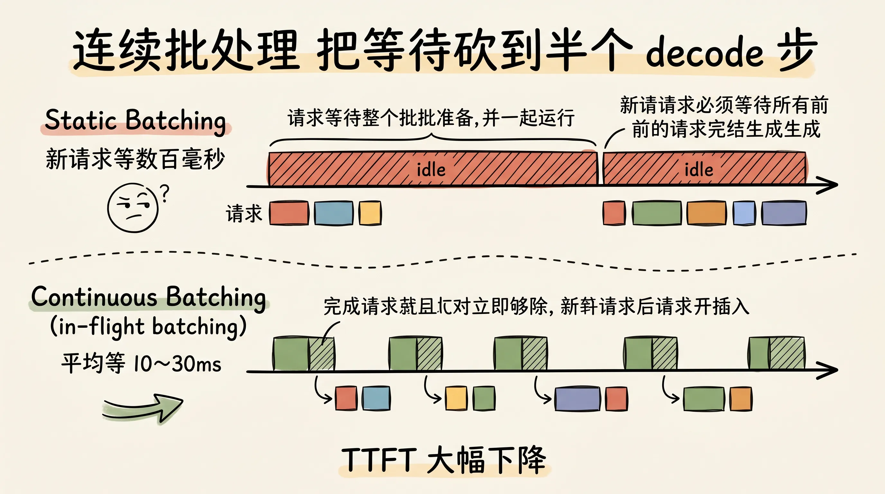
前缀缓存（Prefix Caching，又叫 Automatic Prompt Caching）。不同请求的 system prompt 往往相同，对应的 KV cache（下文详解）可以复用。vLLM 用前缀的 sha256 在内存中查表，命中就跳过这段的 prefill。Anthropic 的 prompt caching 把命中部分的输入价格打到 1/10，本质就是这个。
PD 分离（Prefill-Decode Disaggregation，prefill 和 decode 跑在不同 GPU 节点）。Prefill 是算力密集（compute-bound），decode 是显存带宽密集（memory-bound），混在一起会互相抢资源。PD 分离把两类负载放到不同硬件上，prefill 节点甚至可以用更便宜的算力卡。代价是 KV cache 要在节点间传输，这又催生了 NVLink（NVIDIA 的卡间高速互连，900GB/s 量级）和 RDMA（Remote Direct Memory Access，绕过 CPU 直接访问远程内存）成为标配。
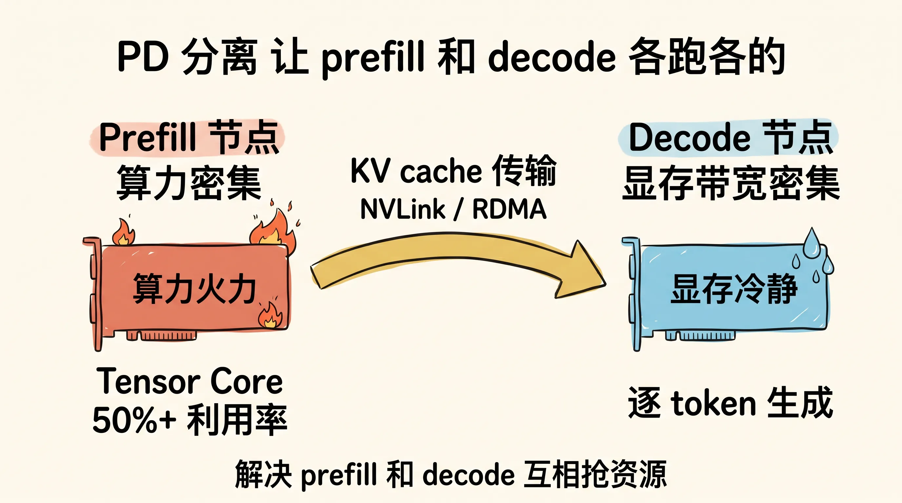
到这一步，请求才真正落到一张特定的 GPU 上，准备开始算。前面这几层加起来通常占 TTFT 的 30~80ms。大型平台的尾延迟（P99）主要就卡在调度排队上。
3. Tokenize：被严重低估的 CPU 瓶颈
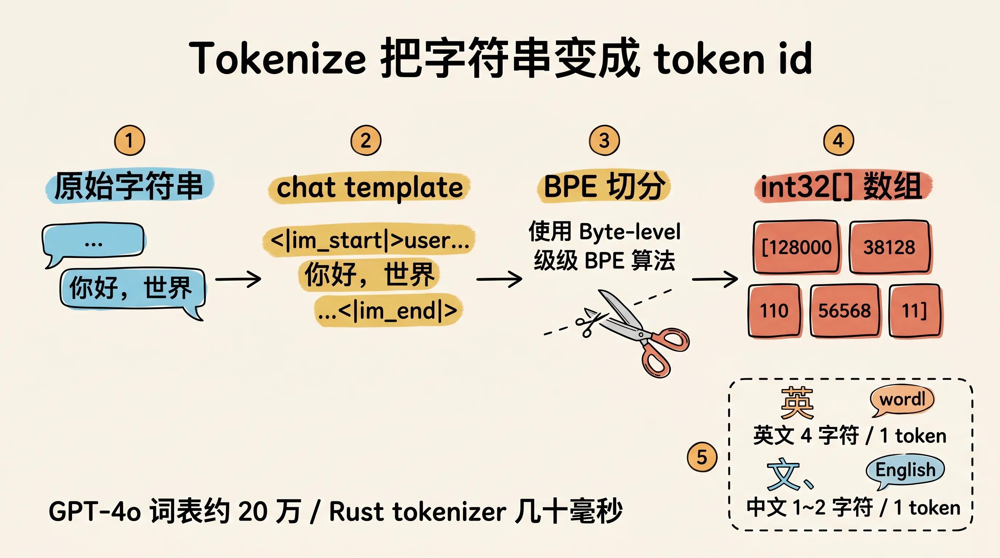
模型不认识文字，只认识数字。Tokenizer（分词器）的作用就是把字符串切成一串整数 ID。
主流的两个算法：
BPE（Byte Pair Encoding，字节对编码）。从单字符开始，统计训练语料中频率最高的相邻字符对，合并成新 token，重复几万次。GPT 系列用的是 BPE 的字节级变种（Byte-level BPE，先把字符串编码成 UTF-8 字节再 BPE，词表里没有「未知字」）。
SentencePiece。Google 提出，把空格也当作一个普通字符（用 ▁ 表示），适合空格不分词的语言（中文、日文）。LLaMA、Gemma 用的是它。
每个 token 在词表里有一个固定 ID（比如 GPT-4o 的词表大小约 20 万），tokenize 的输出就是一个 int32[]。
这一步有三个常被忽略的工程细节。
中文 token 密度高。 英文平均 4 个字符 1 个 token，中文 12 个字符 1 个 token。同样长度的字符串，中文 prompt 的 token 数大约是英文的 23 倍，直接放大 prefill 时间和 API 费用。如果你按英文的经验估算 token 数和成本，中文场景下会偏差 2~3 倍。
Tokenize 是 CPU 工作，会成为瓶颈。 长 prompt（10 万 token 量级）做一次 BPE 在 Python 里要几百毫秒。HuggingFace 的 tokenizers 库（Rust 实现）能压到几十毫秒，所以生产推理引擎全部用 Rust 或 C++ 的 tokenizer，绝不在 Python 主线程里跑。
特殊 token 注入。 Chat 模型在 tokenize 时不是直接把 messages 拼起来，而是用 chat template（一段 Jinja2 模板）把对话格式化成单一字符串，再插入 <|im_start|>、<|im_end|>、<|begin_of_text|> 这些特殊 token（special token，词表中保留的、用于结构化对话的标记）。不同模型的特殊 token 不一样，用错 template 模型会胡言乱语。这是开源模型部署最常见的坑。
Tokenize 完成后，调度器把 token id 数组送到 GPU。一段几千 token 的 prompt 在数据传输上几乎可以忽略（PCIe 4.0 的 32GB/s 带宽），真正花时间的是接下来的 prefill。
4. Prefill：TTFT 的真正大头
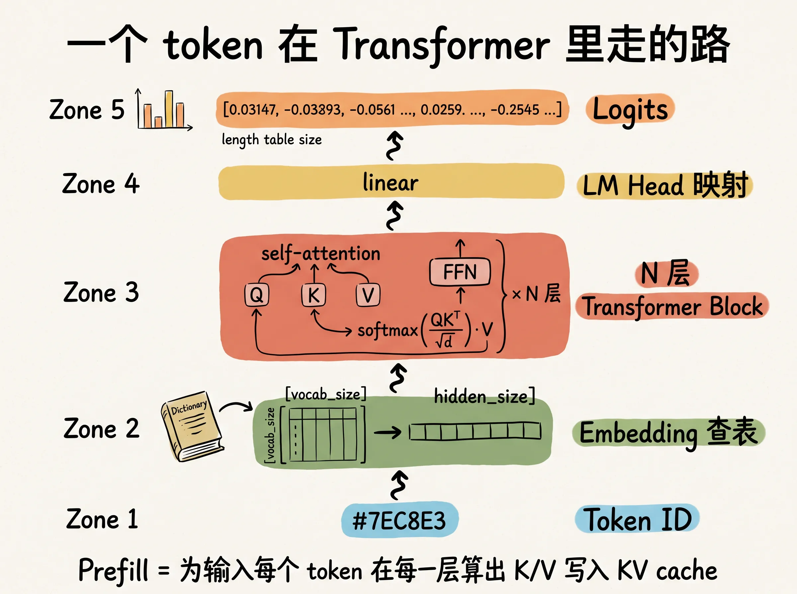
Prefill（预填充阶段）是把整段输入 token 一次性过一遍 Transformer 模型，目的是为后续 decode 准备好 KV cache。这是 TTFT 中最重的一步。
为了讲清楚 prefill 在干嘛，先快速过一遍 Transformer 推理时一个 token 经历了什么：
- Embedding：token id 通过 embedding 矩阵（一个
[vocab_size, hidden_size]的查表）变成一个稠密向量。 - N 层 Transformer block：每层包含 self-attention（自注意力）和 FFN（Feed-Forward Network，前馈网络）。Self-attention 内部为每个 token 算出三个向量 Q（Query，查询）、K（Key，键）、V（Value，值），然后做
softmax(QK^T / √d) · V把当前 token 和所有历史 token 的信息加权融合。 - LM Head：最后一层输出再过一个线性层映射回
[vocab_size]大小的 logits（未归一化的分数向量）。
KV cache（键值缓存）是关键优化。每个 token 在每层都会算出 K 和 V 向量，decode 阶段每生成一个新 token 时，新 token 的 Q 要和所有历史 token 的 K、V 做注意力。如果每步都重新算所有历史 token 的 K、V，复杂度是 O(N²)；把历史 K、V 缓存下来，每步只需要算新 token 的 K、V，复杂度降到 O(N)。代价是显存：KV cache 大小 ≈ 2 × num_layers × num_heads × head_dim × seq_len × batch_size × dtype_bytes，一个 70B 模型在 8K 上下文 + batch 32 下，KV cache 就要十几 GB。
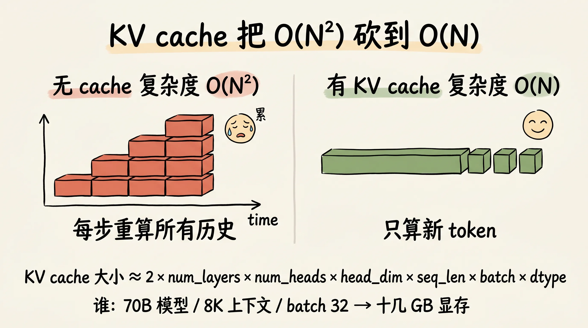
Prefill 阶段在干的就是「为输入的每个 token 在每一层都算出 K 和 V，并写入 KV cache」。N 个输入 token 一次性 forward，矩阵乘法的形状是 [N, hidden] × [hidden, hidden]，N 很大时这是个算力密集（compute-bound）操作，GPU 的 Tensor Core 利用率能压到 50%+。
Prefill 时间近似线性于输入 token 数。实测在 H100 上跑 70B 模型，每千个输入 token 大约 3080ms。所以一个 8K token 的长上下文请求，光 prefill 就要 240640ms。这就是 TTFT 里最大的那块。
围绕 prefill 的优化主要有四种。
Prompt Caching（前缀复用）。 上一节提过，前缀如果命中过往请求的 KV cache，这部分 prefill 直接跳过。多轮对话场景下，第二轮请求的 system prompt + 第一轮历史全是缓存命中，TTFT 能从几百 ms 降到几十 ms。Anthropic、OpenAI、Google 都已经把这个能力对外开放。
Chunked Prefill（分块预填充）。 把超长 prompt 切成多个小块（比如每块 512 token），混在 decode 批次里跑。好处是不会因为一个长 prompt 卡住整个 GPU，让其他请求的 decode 持续推进，降低尾延迟。代价是单个 prefill 的 wall-clock 时间略增。vLLM 默认开启。
Speculative Decoding（投机采样）。 用一个小模型（draft model）先快速生成几个候选 token，大模型一次性验证。这个主要降的是 ITL（Inter-Token Latency，token 间延迟），对 TTFT 几乎没影响。TTFT 看的是第一个 token 出来之前的所有耗时，投机采样作用在 decode 阶段。
FlashAttention / PagedAttention。 前者是 attention 计算的内存访问优化，把中间结果留在 SRAM 里不写回 HBM（HBM 即 High Bandwidth Memory，GPU 的高带宽显存）；后者是 KV cache 的分页管理，类似操作系统虚拟内存，避免大块连续显存碎片化。两者都能直接缩短 prefill 时间，是现代推理引擎的标配。
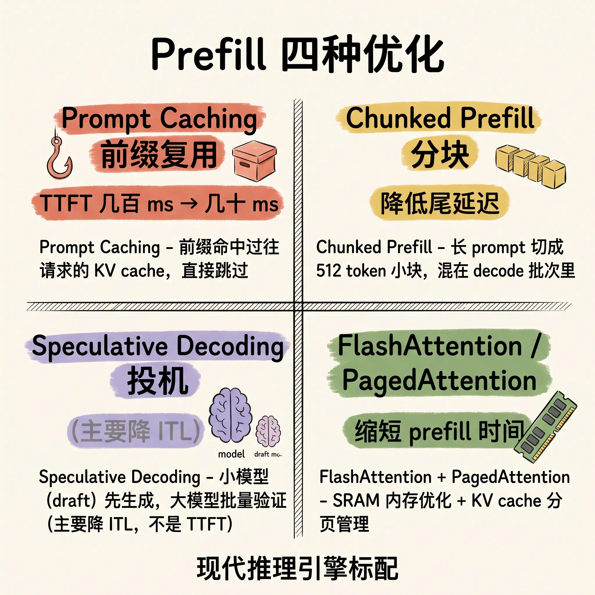
5. 采样：从 logits 到第一个 token
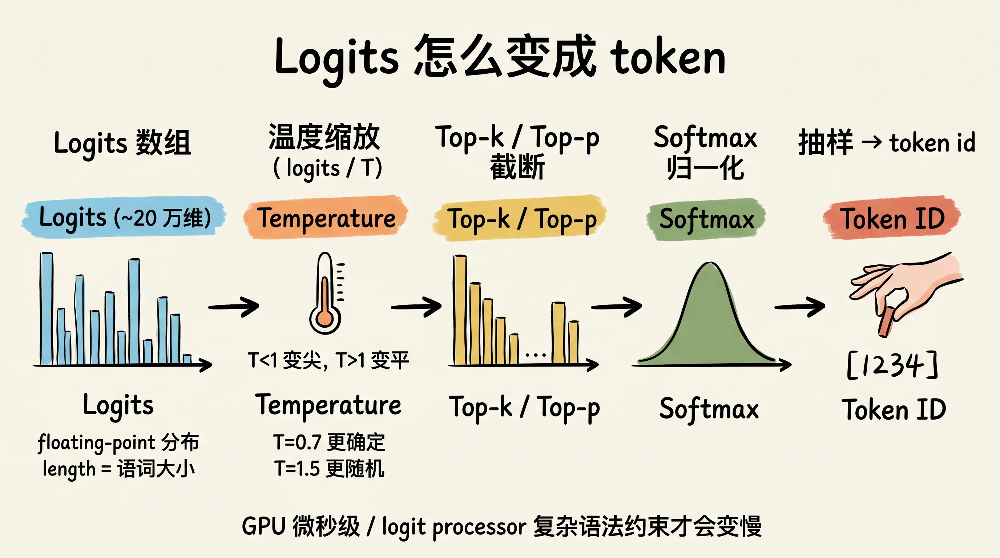
Prefill 跑完，模型给出最后一个输入 token 位置的 logits,一个长度等于词表大小的浮点数组（GPT-4o 大约 20 万维），每一维代表「下一个 token 是这个 ID 的未归一化分数」。
把 logits 变成「一个具体的 token id」叫采样（Sampling）。常见参数：
| 参数 | 含义 |
|---|---|
| Temperature | 温度系数。先做 logits / T，T < 1 让分布变尖（更确定），T > 1 变平（更随机），T = 0 等价于贪心 |
| Top-k | 只保留分数最高的 k 个 token，其他置 -∞，再 softmax 采样 |
| Top-p（Nucleus Sampling） | 按概率从高到低累加，累计达 p（比如 0.9）就截断，剩下的 token 重新归一化后采样 |
| Repetition Penalty | 已生成过的 token 分数打折，抑制重复 |
| Greedy / Argmax | 直接取 logits 最大的那个，等价于 T=0、top-k=1 |
Softmax（归一化指数函数，把任意实数向量映射到「和为 1 的概率分布」）在采样链路里至少调用一次。
采样本身很便宜，一次 softmax 加一次按概率抽样，单 token 在 GPU 上是微秒级。但 logit processor（logits 处理链,可以插入 grammar 约束、禁止 token、JSON Schema 强制格式等）如果开了复杂的语法约束（比如 outlines、xgrammar），会显著增加延迟。
采样出来的 token id 就是「第一个 token」。但它还不是「第一个字」,因为 token 不一定对应一个完整的可显示字符。
6. Detokenize 与 SSE 回传
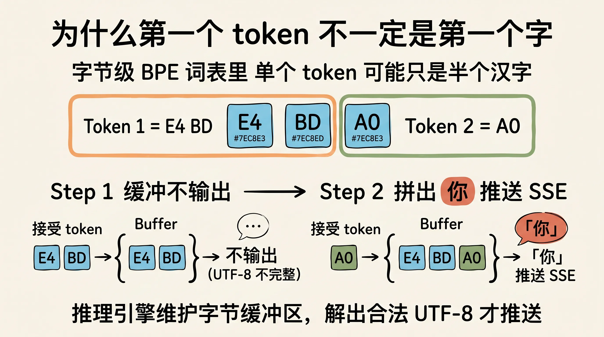
Token id 要变回字符串，这一步叫 detokenize（反分词）。看起来是查表的反向操作，实际上有个非常烦人的细节:单个 token 不一定对应一个完整的 UTF-8 字符。
字节级 BPE 的词表里，单个 token 可能只是「半个汉字」。「你」这个字 UTF-8 编码是 E4 BD A0 三个字节，可能被切成两个 token：E4 BD + A0。如果 detokenize 后立刻 SSE 推送 E4 BD，客户端拿到一个残缺的多字节序列，要么显示乱码,要么前端 UTF-8 解码报错。
所以推理引擎的 detokenize 是增量（incremental）的:维护一个待提交的字节缓冲区，每生成一个新 token，先尝试解码累积的字节序列；只有当解出合法的 UTF-8 字符时,才把这部分字符串推到 SSE 里。这意味着第一个 token 不一定立刻能变成第一个屏幕上的字符,有时候要等到第二、第三个 token 一起来才能拼出一个汉字。
SSE 协议本身很简单。HTTP 响应头里 Content-Type: text/event-stream、Cache-Control: no-cache，body 部分逐块发送，每一块是 data: {...}\n\n 格式。OpenAI/Anthropic 的实现里，每个 event 的 data 字段是一个 JSON 字符串，包含 delta（增量内容）、finish_reason（结束原因，stop/length/tool_use/content_filter 等）等字段。最后一个 event 是 data: [DONE]\n\n。
回程的物理路径和入口几乎对称：inference engine 写入响应队列 → API Gateway 透传（注意网关不能缓存 SSE，否则会破坏流式语义）→ CDN edge 转发 → 客户端 TCP 接收。
这一段还有几个常见的工程坑。
中间层缓冲是最容易踩的一个。Nginx 默认开启 proxy_buffering on，会把后端的 SSE 流缓冲一定量再下发，直接破坏流式效果，第一个字可能要等几秒才出来。生产配置必须显式 proxy_buffering off 并且 proxy_http_version 1.1; proxy_set_header Connection "" 保持长连接。
HTTP/2 在丢包场景下还有 head-of-line blocking（队头阻塞，TCP 层一个包丢了,整个连接的所有 stream 都卡住）。HTTP/3 基于 QUIC（运行在 UDP 上的传输协议）解决了这个问题，对移动网络下的 TTFT 有明显改善。
最后一公里在浏览器里。浏览器收到 SSE chunk 后还要触发 React/Vue 的 state 更新和 DOM 重排，高频更新（每 token 一次）会让 UI 线程卡顿。生产前端通常用 requestAnimationFrame 把多个 chunk 合并到一帧渲染，60fps 下大概 16ms 合一次。
第一个字到了你眼前，TTFT 才算结束。
7. 冷启动 vs 热请求：同一条链路的两种命运
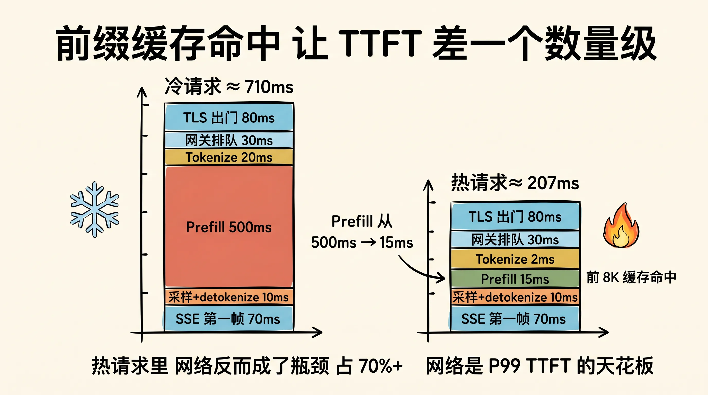
同一段链路，有没有命中前缀缓存，TTFT 可以差一个数量级。下面是一个具体场景，方便你建立量级感。
场景是这样:8K token 的 system prompt + 一段几百 token 的对话历史，用户提一个新问题（200 token 左右）。模型用 70B Decoder-Only（解码器架构,目前主流大模型的形态），部署在 H100 上，PD 分离 + chunked prefill 已开。
冷请求（首次提问，缓存全 miss）：
| 阶段 | 估算 |
|---|---|
| 客户端 + 跨区 TLS 出门 | 80ms（连接复用，无完整握手） |
| 网关鉴权 + 调度器排队 | 30ms |
| Tokenize 8K+ token | 20ms |
| Prefill 8.2K token | ≈ 500ms（每千 token ~60ms） |
| 采样 + detokenize 第一个字符 | 10ms |
| SSE 第一帧回到浏览器 | 70ms |
| TTFT 合计 | ≈ 710ms |
热请求（同一会话第二轮，前 8K + 历史已是缓存前缀）：
| 阶段 | 估算 |
|---|---|
| 客户端 + 跨区 TLS 出门 | 80ms |
| 网关鉴权 + 调度器排队 | 30ms |
| Tokenize 200 token 增量 | 2ms |
| Prefill 200 个新 token（前 8K 缓存命中跳过） | ≈ 15ms |
| 采样 + detokenize 第一个字符 | 10ms |
| SSE 第一帧回到浏览器 | 70ms |
| TTFT 合计 | ≈ 207ms |
差距来自 prefill 从 500ms 降到 15ms，省下来的 485ms 全是 GPU 上的浮点运算。
注意一个反直觉的细节:网络往返反而成了热请求的瓶颈。冷请求里 prefill 占了 70%，网络只占 20%；热请求里网络占了 70%+，prefill 几乎可忽略。这意味着热路径上继续优化 prefill 收益递减，下一步该优化的是就近接入和长连接保持。
所以大厂都在做 regional inference（按地区部署推理集群）和 edge inference（把小模型推到边缘节点）。当 prefill 已经被 prompt caching 砍到地板上，网络延迟才是 P99 TTFT 的天花板。
总结：TTFT 是怎么被一毫秒一毫秒抠出来的
把上面七层串起来，一个冷启动（无 prompt cache 命中）的请求典型耗时分布：
| 阶段 | 典型耗时 | 优化手段 |
|---|---|---|
| 客户端 + 网络出门 | 30~200ms | TLS 1.3 0-RTT、HTTP/2 连接复用、就近接入 |
| 网关鉴权与排队 | 10~80ms | 限流前置、连续批处理 |
| Tokenize | 5~50ms | Rust/C++ 实现的 tokenizer |
| Prefill | 50~600ms | Prompt caching、chunked prefill、PagedAttention |
| 采样 | < 5ms | logit processor 简化 |
| Detokenize + SSE 第一帧 | 5~30ms | 增量 detokenize、关闭中间层 buffer |
| 客户端渲染第一字 | < 16ms | rAF 节流 |
数字加起来，冷请求 TTFT 通常落在 200ms ~ 1.5s 之间；命中前缀缓存的热请求可以压到 100ms 以内。
回头看，Prompt Caching 是收益最大的一颗银弹，它直接把 prefill 那块大头砍掉。这也是为什么所有大厂都在 2024~2025 年密集上线这个能力，对延迟和成本同时降一个数量级，几乎没有副作用。
紧随其后的是 PD 分离、连续批处理、PagedAttention 这套组合拳。它们解决的是同一个问题:让 GPU 永远不闲。Prefill 算力密集时 decode 不要抢、decode 显存密集时 KV cache 不要碎、有空位就立刻塞新请求进来。
再往后才是网络层。把模型推到离用户最近的 PoP，HTTP/3 取代 HTTP/2，TLS 1.3 取代 1.2。每一项单独看只省几十 ms，加起来对 P99 尾延迟的影响相当可观。
还有一点容易被忽略:TTFT 的优化方向和 ITL（token 间延迟）的优化方向并不一致。Speculative Decoding、MoE（Mixture of Experts，专家混合，每次只激活部分参数）这些主要降的是 ITL；prompt caching、chunked prefill 主要降的是 TTFT。生产系统调优时要分清楚,P99 用户抱怨的是「半天不出字」（TTFT 高）还是「字蹦得太慢」（ITL 高），优化路径完全不同。
回到最开始那个问题：你按下回车，到屏幕上出现第一个「好」字，中间发生了什么？
一次 TLS 握手（也可能复用）、一次 DNS 查询（也可能命中缓存）、一次跨大洋的 TCP 往返、一次网关鉴权、一次调度器排队、一次 Rust tokenizer 的 BPE 切分、一次几百亿次浮点运算的 prefill、一次 softmax 采样、一次 UTF-8 字节缓冲、一次 SSE chunk 推送、一次浏览器 DOM 更新。
每一步看起来都不复杂，但加在一起就是一场和延迟较劲的硬仗。下次再看到「第一个字慢」，你大概知道它卡在哪一层了。
参考资料
- vLLM Documentation PagedAttention、Continuous Batching 的参考实现
- Anthropic Prompt Caching 前缀缓存的官方文档
- SGLang 另一个开源推理引擎，RadixAttention 论文
- FlashAttention Tri Dao 的开山之作
- Splitwise 微软关于 PD 分离的论文